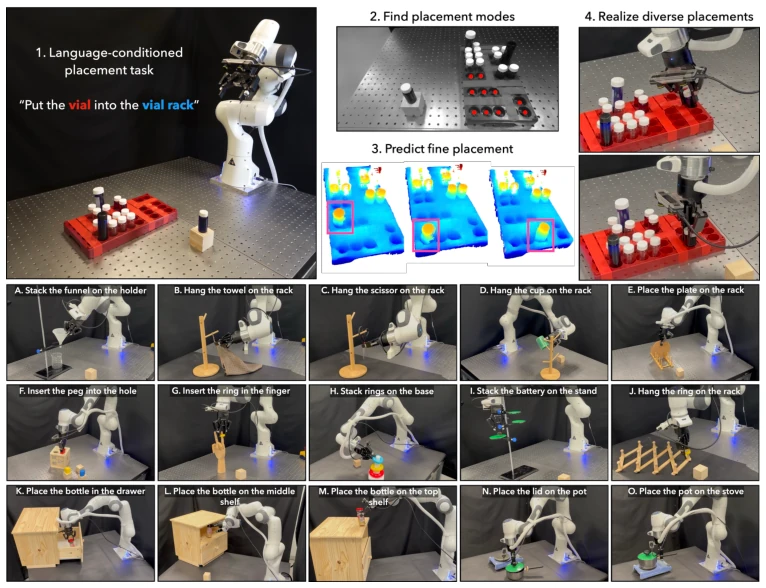
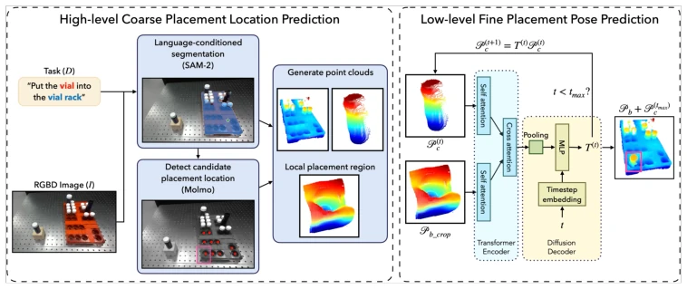
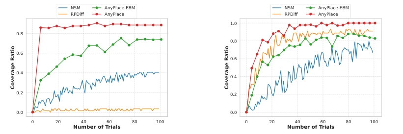
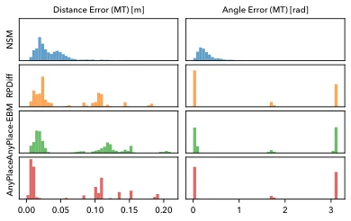
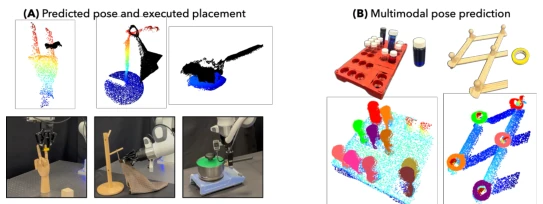

This paper proposes a 'coarse-fine' two-stage framework, first using a VLM to locate regions and then employing a diffusion model to adjust poses. Although training relies entirely on synthetic data, it achieves zero-shot performance on 16 tasks on real hardware, demonstrating impressive generalization capabilities. However, if the VLM misidentifies the location, subsequent efforts by the diffusion model are futile, and slight noise in the point cloud can cause failures in fine tasks such as insertion. Overall, it is a promising 'coarse-fine' framework, but one should not expect human-like tactile feedback; robust contact handling still depends on force control. It decomposes complex problems, leveraging the VLM's spatial reasoning to narrow the search space, allowing the low-level model to focus on geometric matching. This strategy is quite popular in Embodied AI, yet the performance is indeed superior to pure end-to-end approaches.
Object placement appears simple but is actually fraught with difficulties. Existing methods either target specific tasks (e.g., hanging clothes [1]) or rely on few demonstrations [2-11], suffering from poor generalization. Although NSM [12] and RPDiff [1] can predict poses, they fall short in multimodal coverage and accuracy. Particularly when facing unseen objects or complex scenes, a single model struggles to accommodate multiple placement modes (e.g., insertion, stacking, hanging). AnyPlace attempts to address the issues of excessive search space and incomplete mode coverage through VLM guidance to achieve more general placement. The authors reformulate the placement problem as paired shape matching, unifying the learning objective to address the generalization bottleneck of existing methods on unseen objects. Additionally, existing methods often exhibit incomplete coverage when handling multimodal outputs, failing to meet practical task requirements.
The overall process is divided into two steps. First, a VLM (e.g., Molmo) and a segmentation model are utilized to locate potential placement points in RGBD images based on language instructions, cropping out local point cloud regions. This step addresses the 'where to place' question and supports multimodal pattern recognition. Second, the low-level model receives the target object and local base point clouds, using a Transformer encoder to extract features, paired with a Diffusion decoder for iterative denoising to predict relative transformation. This 'coarse-fine' mechanism allows the low-level model to focus solely on local geometry, reducing learning difficulty. Regarding the dataset, the authors constructed synthetic data comprising 13 object classes and 5370 poses, covering three configurations: stacking, insertion, and hanging, ensuring the model learns general geometric features. During training, L1 distance and geodesic distance are adopted as loss functions to ensure pose accuracy. Furthermore, the model integrates AnyGrasp for grasp prediction and employs cuRobo for motion planning to ensure execution feasibility.
In simulation, comparisons were conducted against NSM [12], RPDiff [1], and EBM variants. AnyPlace leads in success rate, coverage, and accuracy, particularly in multimodal tasks (e.g., inserting bottles) where coverage approaches 100%. Real hardware experiments were tested on 16 unseen tasks, achieving an average success rate of 76%, while most baselines failed. Ablation experiments indicate that the diffusion decoder outperforms EBM. It was observed that the low-level model can still compensate when VLM localization is inaccurate, but sparse point clouds result in insertion failure. This demonstrates that training on synthetic data can be directly transferred to the real world. Evaluation metrics include success rate, coverage, and accuracy, comprehensively showcasing model performance. Specific tasks cover stacking, insertion, and hanging, verifying the method's generality.
其他图片Other Figures

Figure 1: Execution of the AnyPlace approach by the robot. (1) Given a language description of a placement task, the robot first captures an RGBD image of the scene using its eye-in-hand camera. (2) A segmentation model and a VLM are used to segment objects and suggest possible placement locations. (3) Multiple placement poses are predicted for objects around suggested locations. (4) The robot realizes placement into any of the predicted poses. (A-O) AnyPlace shows generalization and robustness in predicting placement poses across 16 tasks in the real world, despite being trained purely on a small synthetic dataset.

Figure 2: Overview of the AnyPlace placement pose prediction approach. (1) High-level Coarse Placement Location Prediction: Given an input language description and an RGBD image, we leverage a VLM and a segmentation model to extract objects of interest. We then prompt the VLM to propose possible placement locations and crop the region of interest centered on the proposed points. The resulting point clouds are fed into the low-level model. (2) Low-level Fine Placement Pose Prediction: We use a transformer architecture, with a diffusion decoder to predict relative transformation of the point clouds to realize placement.

Figure 4: Coverage comparison across different models in vial insertion and hanging tasks. In both cases, AnyPlace achieves near-perfect coverage with just a few samples, while baselines fail to match this even with 100 samples.

Figure 5: Errors on insertion tasks. Based on his- tograms of the translation and rotation error in pose prediction, it is clear that AnyPlace achieves the best precision. (MT): models trained on multi-task data.

Figure 6: Demonstration of robot executing diverse real-world tasks using AnyPlace predictions. Trained only on synthetic data, the model generalizes to unseen objects and effectively handles noisy point clouds.